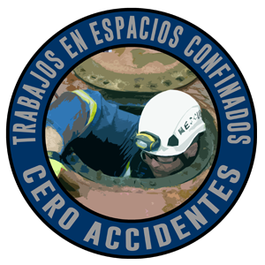

Somos una empresa dedicada a la consultoría, análisis, planificación, distribución y sobre todo a la capacitación de empresas.

Somos conscientes de la importancia de tener conocimientos de los primeros auxilios ante una situación de emergencia.
Saber cómo tenemos que reaccionar en un momento inesperado puede ayudar a salvar vidas.

La brigada de emergencia tiene una gran importancia en el sitio de trabajo porque implica una toma de medidas frente a potenciales accidentes.
Así, estos grupos son formados y entrenados especialmente para llevar a cabo distintas tareas ligadas a la actuación frente inconvenientes asociados a las tareas que pueden existir en el lugar de trabajo.

Como cada año, los accidentes producidos por las caídas a distinto nivel continúan siendo una de las principales causas de absentismo laboral, lesiones irreversibles y muertes en el puesto de trabajo.

Los espacios confinados son altamente peligrosos para la vida de cualquier trabajador que se desenvuelve dentro de él. Es necesario saber qué es un espacio confinado, cuáles son los principales riesgos y los procedimientos adecuados y seguros en situaciones de emergencia.
La correcta información puede ayudar a prevenir accidentes y, en consecuencia, a salvaguardar la vida de las personas. En el presente artículo conozcamos su definición, diseño, identificación, riesgos, emergencias, y competencias necesarias del equipo de rescate frente a emergencias y primeros auxilios.

PRO Salud Y Seguridad Ocupacional.
502+59698455
502+57583500
Los trabajadores con conocimientos de seguridad, prevención de riesgos y salud ocupacional son claves dentro de cualquier organización.